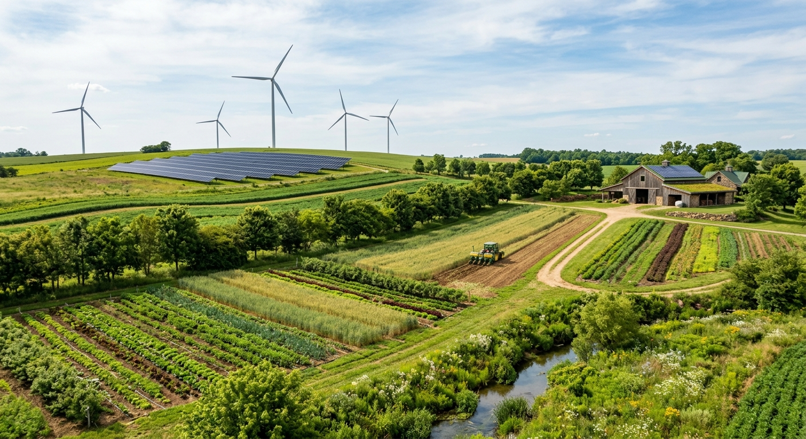
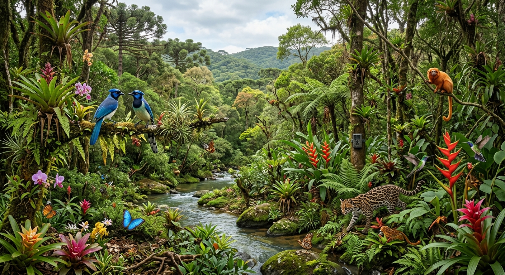

Embrapa
Empresa Brasileira de Pesquisa Agropecuária. Pesquisas e conteúdos relacionados à agricultura, sustentabilidade, conservação do solo, água e tecnologias agrícolas.
Acessar Embrapa ↗O agronegócio possui um papel fundamental na sociedade. Ao mesmo tempo em que produz alimentos e matérias-primas, depende diretamente dos recursos naturais. Por isso, pensar em sustentabilidade significa buscar maneiras de produzir com responsabilidade, eficiência e respeito ao meio ambiente.
Conheça o tema ↓O conceito de agronegócio sustentável está relacionado à busca por um modelo de produção capaz de atender às necessidades atuais sem comprometer os recursos que serão necessários no futuro. A agricultura depende do solo, da água, do clima, da biodiversidade e de diversos outros elementos naturais. Quando esses recursos são utilizados de maneira inadequada, a própria produção agrícola pode ser prejudicada.
Por esse motivo, sustentabilidade no campo não significa simplesmente produzir menos. Pelo contrário: significa procurar formas mais eficientes de produzir, reduzindo desperdícios, conservando os recursos naturais e utilizando conhecimento e tecnologia para melhorar as decisões.
A sustentabilidade também envolve uma dimensão econômica e social. Uma propriedade rural precisa ser capaz de gerar renda, manter sua atividade ao longo do tempo e contribuir para a qualidade de vida das pessoas envolvidas. Dessa maneira, produção, economia, sociedade e meio ambiente precisam ser considerados em conjunto.
Ela também pode representar planejamento, economia de recursos, inovação, eficiência e maior capacidade de adaptação às mudanças que acontecem no campo.

A agricultura sustentável procura equilibrar a produção de alimentos com a conservação dos recursos naturais. Isso significa observar não apenas quanto uma propriedade consegue produzir, mas também como essa produção interfere no solo, na água, na biodiversidade e no ambiente ao redor.
Uma das preocupações importantes está relacionada à conservação do solo. A erosão, a perda de matéria orgânica e o uso inadequado da terra podem diminuir sua qualidade ao longo do tempo. Práticas de manejo adequadas podem contribuir para conservar suas características e manter sua capacidade produtiva.
A rotação de culturas, a cobertura do solo, o planejamento do plantio e outras estratégias podem ajudar a reduzir impactos e melhorar o aproveitamento dos recursos. O objetivo não é encontrar uma única solução, mas adaptar as práticas às características de cada propriedade.

A água é indispensável para a agricultura. Ela participa do desenvolvimento das plantas e está presente em diferentes etapas das atividades rurais. Entretanto, utilizar esse recurso sem planejamento pode gerar desperdícios e aumentar os custos da produção.
A irrigação é um dos pontos que merece atenção. Sistemas mais eficientes podem distribuir a água de maneira mais adequada, evitando que grandes quantidades sejam perdidas. O monitoramento das condições do solo e das necessidades das culturas também pode auxiliar o produtor a tomar decisões melhores.
Economizar água não significa deixar de utilizá-la. Significa utilizar apenas o necessário e procurar reduzir perdas. Essa mudança de perspectiva é importante porque a conservação dos recursos hídricos está diretamente relacionada à continuidade da produção agrícola.

A produção rural também necessita de energia para diferentes atividades. Equipamentos, sistemas de irrigação, armazenamento e outras estruturas dependem de eletricidade ou combustíveis para funcionar.
Nesse contexto, as fontes renováveis podem representar uma alternativa importante. A energia solar, por exemplo, utiliza a radiação do Sol para gerar eletricidade e pode ser utilizada em propriedades rurais que possuam condições adequadas para sua instalação.
Além da questão ambiental, a adoção de tecnologias energéticas deve considerar fatores econômicos, localização, investimento inicial, manutenção e necessidade de consumo. Dessa maneira, a escolha da fonte de energia deve ser planejada de acordo com a realidade de cada propriedade.

Biodiversidade é a variedade de seres vivos existentes em determinado ambiente. Ela envolve plantas, animais, fungos, microrganismos e as relações estabelecidas entre eles. Nos ambientes rurais, essa diversidade possui importância ecológica e pode estar relacionada ao funcionamento dos próprios ecossistemas.
Áreas de vegetação nativa, matas e outros ambientes naturais podem oferecer abrigo e alimento para diferentes espécies. Entre elas estão os polinizadores, que possuem importância para diversas plantas e culturas agrícolas.
Preservar a biodiversidade significa reconhecer que a produção agrícola não acontece de maneira isolada. Ela faz parte de um ambiente maior. Por isso, conservar áreas naturais e utilizar o território de forma planejada contribui para uma relação mais equilibrada entre produção e natureza.

A tecnologia vem transformando a maneira como muitas atividades agrícolas são planejadas e executadas. Ferramentas digitais podem ajudar a reunir informações sobre o solo, o clima, as plantas e diferentes áreas da propriedade.
A agricultura de precisão é um exemplo. Ela utiliza tecnologias como GPS, sensores, imagens e sistemas de análise para auxiliar o produtor a tomar decisões mais específicas. Em vez de tratar toda uma área exatamente da mesma maneira, é possível analisar diferenças existentes dentro da própria propriedade.
Drones e imagens aéreas também podem auxiliar no monitoramento. A tecnologia, portanto, não deve ser vista apenas como uma forma de modernizar máquinas, mas como uma ferramenta para melhorar o planejamento, reduzir desperdícios e utilizar informações para tomar decisões mais eficientes.
A água é um dos recursos mais importantes para a produção agrícola. Esta calculadora permite fazer uma estimativa simples de quanto uma propriedade poderia economizar caso adotasse uma prática capaz de reduzir seu consumo de água.
O resultado é uma estimativa educativa. Na realidade, o consumo depende da cultura, do clima, do solo, do sistema de irrigação e de diversas outras características da propriedade.
Preencha os campos acima para visualizar uma estimativa.
O desenvolvimento sustentável do agronegócio não depende de uma única tecnologia ou de uma única prática. Ele é resultado de várias decisões realizadas ao longo do processo produtivo.
Conservar o solo, utilizar a água de maneira responsável, buscar fontes renováveis de energia, proteger a biodiversidade e utilizar tecnologia para melhorar o planejamento são ações que podem fazer parte de uma mesma estratégia.
As informações apresentadas neste projeto foram baseadas em instituições reconhecidas nas áreas de agricultura, meio ambiente, estatística e desenvolvimento sustentável.
Empresa Brasileira de Pesquisa Agropecuária. Pesquisas e conteúdos relacionados à agricultura, sustentabilidade, conservação do solo, água e tecnologias agrícolas.
Acessar Embrapa ↗Informações oficiais sobre políticas públicas, produção agropecuária e desenvolvimento do setor agrícola brasileiro.
Acessar MAPA ↗Dados estatísticos e informações sobre território, agricultura, população e meio ambiente no Brasil.
Acessar IBGE ↗Os Objetivos de Desenvolvimento Sustentável apresentam metas relacionadas à produção responsável, água, energia, meio ambiente e desenvolvimento sustentável.
Acessar ONU ↗Organização das Nações Unidas para a Alimentação e a Agricultura, com conteúdos sobre sistemas alimentares, agricultura e sustentabilidade.
Acessar FAO ↗